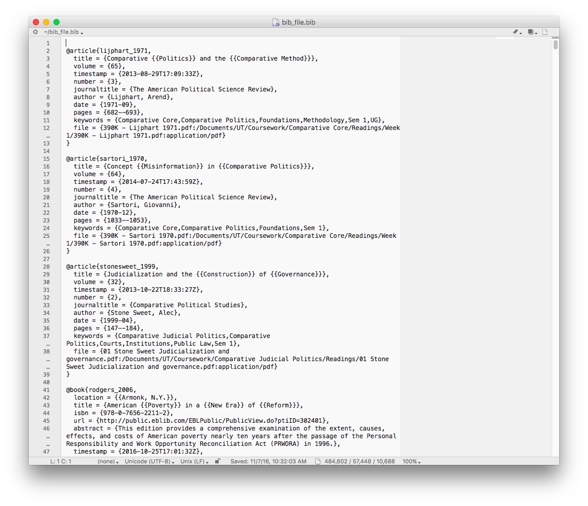
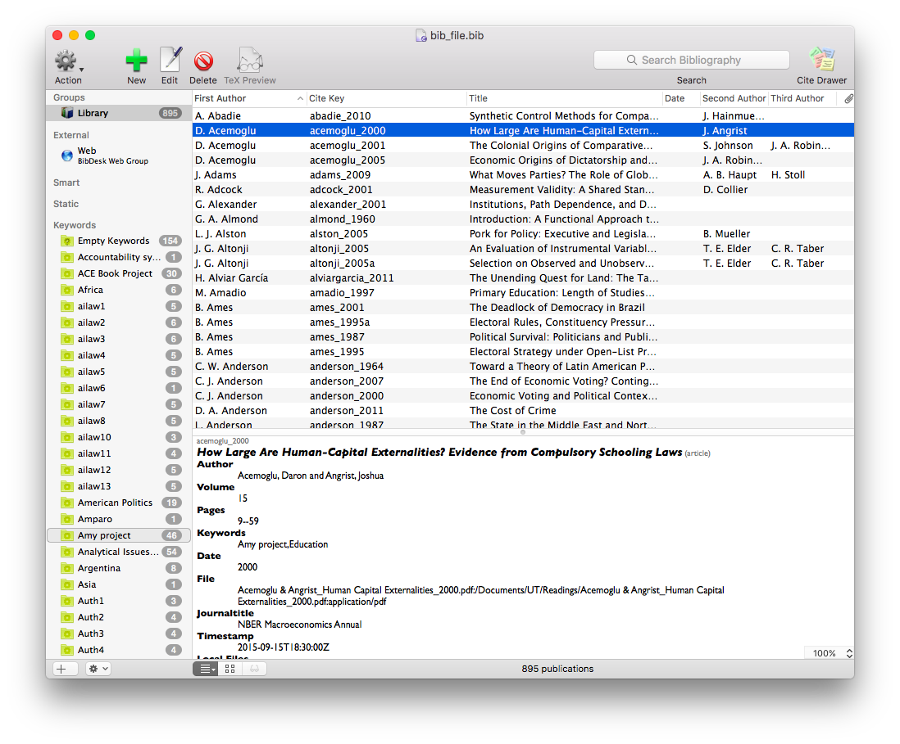
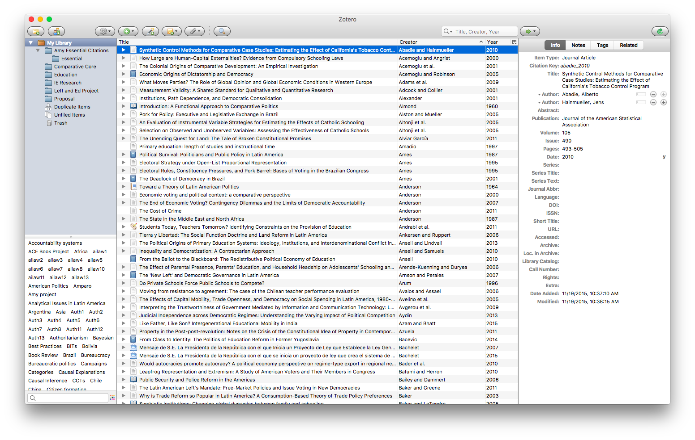
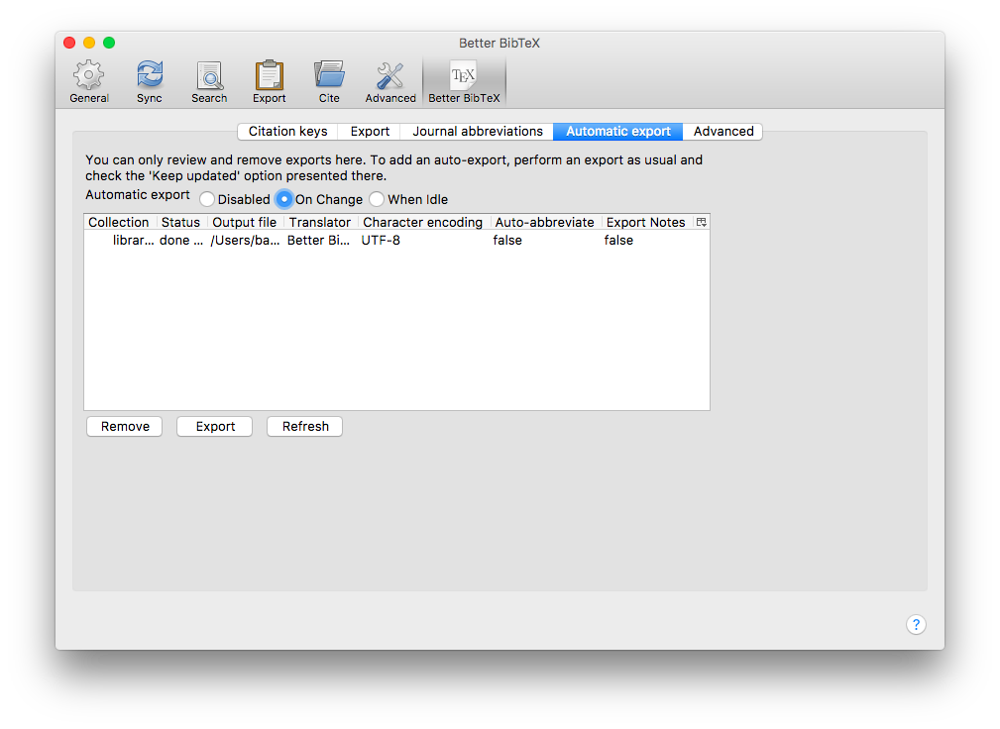

.bib extension, is a plain text file that contains a list of your citations




\usepackage{natbib}\citep{<citekey>} for an parenthetical citation\citep[<pages>]{<citekey>} for parenthetical with a page citation\citet{<citekey>} for a text citation\citeyear{<citekey>} for just the year citation\clearpage % to add a page break
\bibliographystyle{apsr} % assuming you have apsr.bst saved in the correct location
\bibliography{<your_bib_file>}~/Library/texmf/bibtex/bst for global access (on Mac, not sure about Windows)\usepackage[style=authoryear, url=false, doi=false]{biblatex}
\addbibresource{<your_bib_file>}\autocite{<citekey>} for almost everything\textcite{<citekey>} for a text citation\autocite[<page_no>]{<citekey>} also works for page numbers\citeyear{} if you need\clearpage % to add a page break
\printbibliographyDefault is to put “In:” before the journal name; solve with (one line)
\renewbibmacro{in:}{\ifentrytype{article}{}
{\printtext{\bibstring{in}\intitlepunct}}}\usepackage[american]{babel}\usepackage{csquotes}latexmk <yourfile.tex>
-xelatex or -c\usepackage{hyperref}\hypersetup{colorlinks=true}\newbibmacro{string+doi}[1]{%
\iffieldundef{doi}{#1}{\href{http://dx.doi.org/\thefield{doi}}{#1}}}
\DeclareFieldFormat{title}{\usebibmacro{string+doi}{\mkbibemph{#1}}}
\DeclareFieldFormat[article]{title} % should be one line with next
{\usebibmacro{string+doi}{\mkbibquote{#1}}}